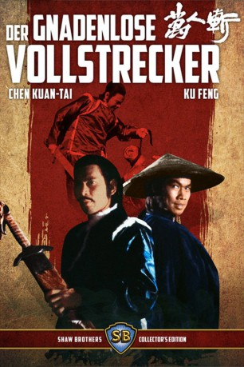

#2834 Der Gnadenlose Vollstrecker
Alternativ: Killer Constable (Englischer Titel)
 
 IMDB-Wertung: 7.0 / 10
IMDB-Wertung: 7.0 / 10  Metascore: 0
Metascore: 0 
Die Königliche Schatzkammer wurde um 2 Mio Unzen Gold beraubt. Oberst LENG wird mit der Verfolgung der Diebe beauftragt. Oberst LENG, der den Ruf hat, dass er keine Gefangenen macht, nimmt den Auftrag an. Mit 5 Getreuen macht er sich auf den Weg, die Diebe zu fangen.
Jahr: 1980
Dauer: 96 Minuten
FSK: 18
Land: Hong-Kong Studio: 'Karate Exterminators'Tonspuren:
Untertitel: Deutsch,
Auflösung: 1080p (1920x816) Größe: 4669 MB
Genre: Action, Drama
Regisseur: Chih-Hung Kuei
Drehbuch: On Szeto
Soundtrack: Eddie Wang
Darsteller:
Datei: X:\FSK18-Eastern\Gnadenlose Vollstrecker, Der (1980, FSK18, 1920x816).mkv seit 22.12.2015
Festplatte: FSK18
 Es gibt insgesamt 102 Filme in der Gruppe 'FSK18-Eastern'
Es gibt insgesamt 102 Filme in der Gruppe 'FSK18-Eastern'